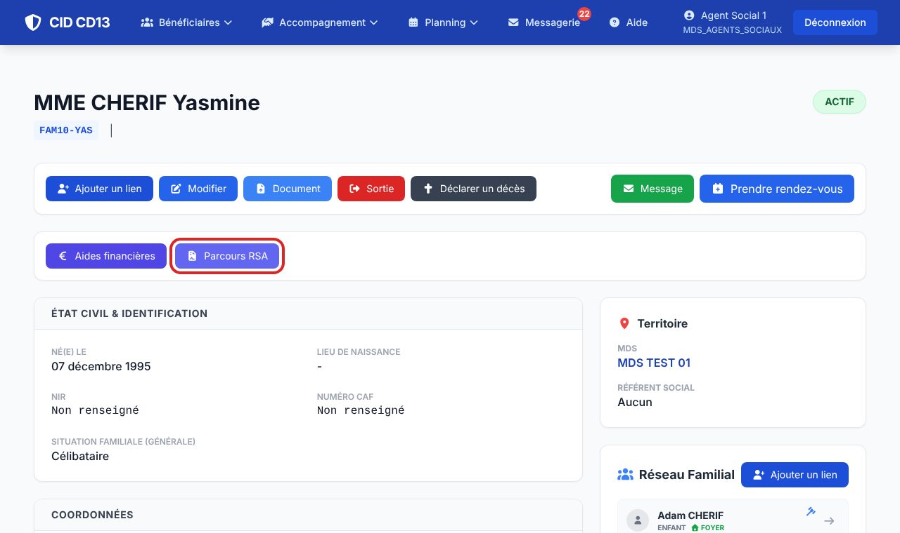
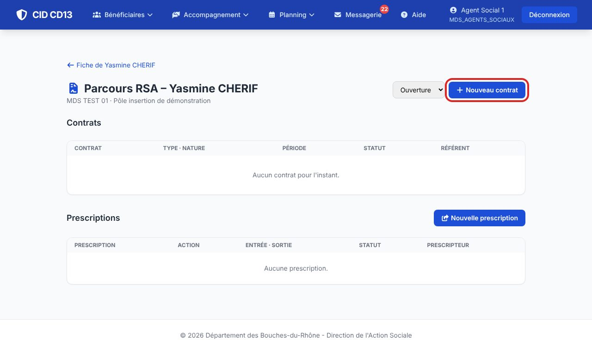
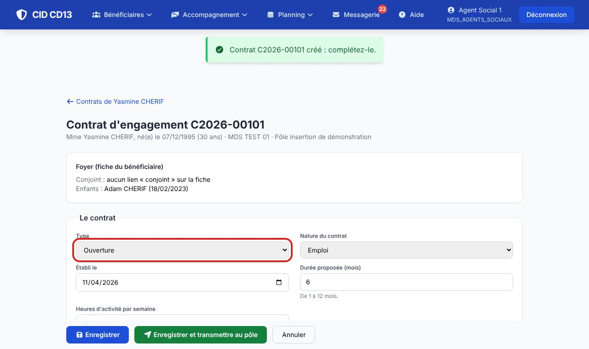
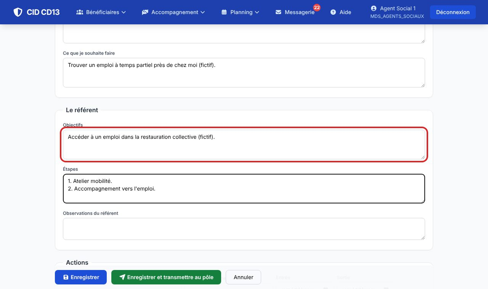
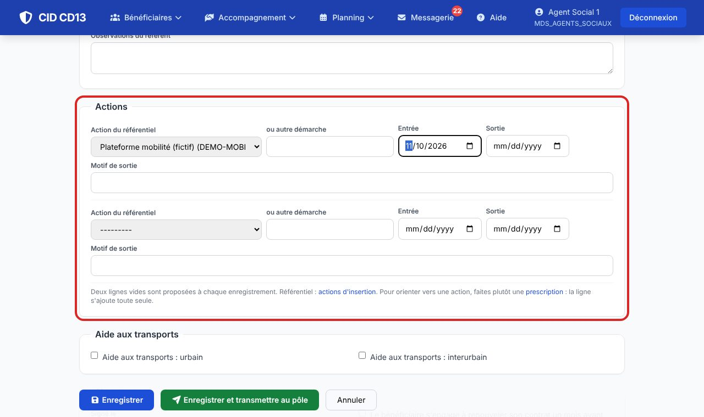
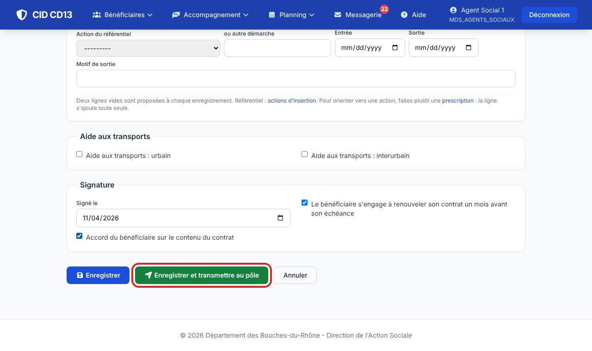
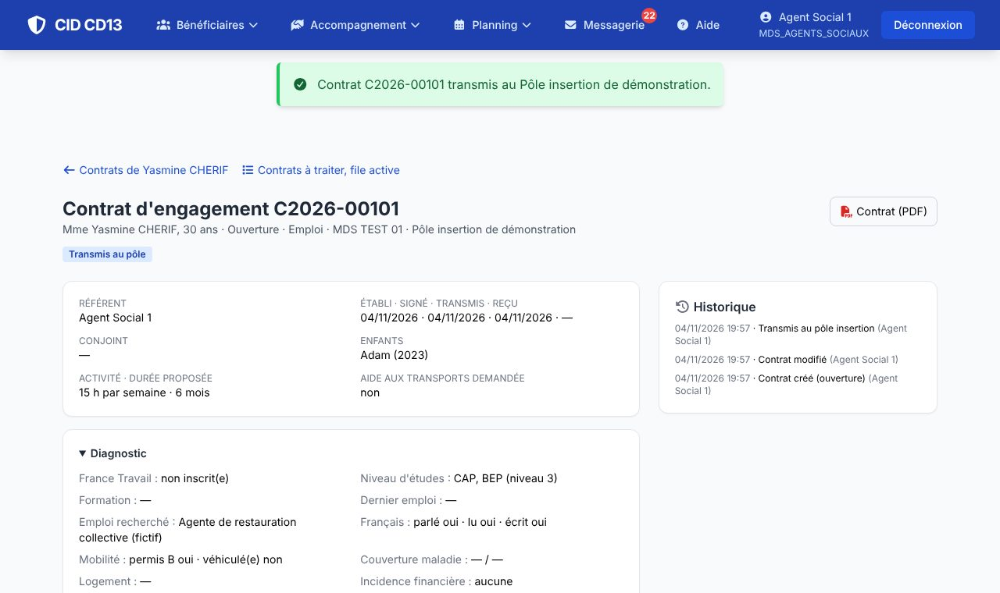

1Ouvrir les contrats du bénéficiaire


- Sur la fiche du bénéficiaire, cliquez sur Parcours RSA (contrats et prescriptions).
- Choisissez le type : ouverture (premier contrat), prolongement ou rétablissement (après une suspension ; après une radiation, c'est une nouvelle demande à la CAF et donc une ouverture).
- Un prolongement ou un rétablissement reprend le diagnostic et les actions en cours du dernier contrat validé.
2Remplir le contrat


- Les rubriques suivent l'imprimé : conjoint, diagnostic, incidence financière, parole du bénéficiaire, objectifs et étapes du référent, aide aux transports.
- Le conjoint, les enfants et l'identifiant France Travail viennent de la fiche du bénéficiaire.
- Le contrat d'engagement sur mesure prévoit au moins 15 heures d'activité par semaine (réglable en administration).
3Choisir les actions

- Choisissez une action du référentiel (actions départementales et actions locales de votre MDS), ou décrivez une autre démarche.
- Deux lignes vides sont proposées à chaque enregistrement : enregistrez pour en ajouter d'autres.
4Signer et transmettre


- Imprimez le Contrat (PDF) pour la signature, puis indiquez la date de signature et cochez l'accord du bénéficiaire.
- Enregistrer et transmettre au pôle : CID vérifie qu'il ne manque rien (signature, accord, objectifs, une action au moins) et prévient l'administratif du pôle.
Bon à savoir
- Tant qu'il n'est pas transmis, le contrat reste modifiable ; vous pouvez aussi l'annuler.
- Un contrat ajourné par la commission revient chez vous, modifiable, avec le motif ; transmettez-le de nouveau une fois repris.
- Chaque étape est tracée dans l'historique du contrat, et la décision vous arrive par la messagerie.
Et ensuite ?
Cliquez sur une image pour l'agrandir. Le cadre rouge montre où cliquer ou quoi remplir. Toutes les données affichées sont fictives.